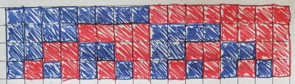
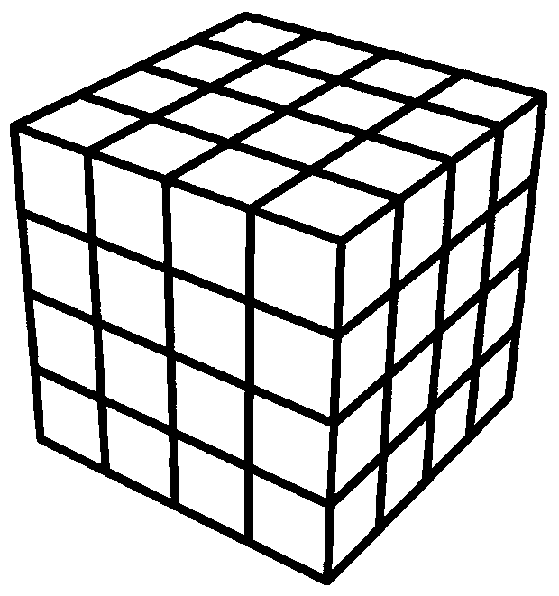
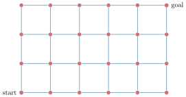
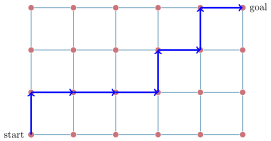

Combinatorics
To enumerate means to put numbers to, or count off.
Combinatorics is the foundational branch of mathematics concerned with counting.
How many squares?
More general questions are:
How many squares in an \(m \times m\) grid?
How many squares in an \(m \times n\) grid?
How many squares in an \(m \times m\) grid?
How many squares in an \(m \times n\) grid?

How many cubes?
More general questions are:
How many cubes in an \(m \times m \times m\) grid?
How many cubes in an \(l \times m \times n\) grid?
How many cubes in an \(m \times m \times m\) grid?
How many cubes in an \(l \times m \times n\) grid?
Sometimes we are given a particular problem and we want to generalize it.
Sometimes we are given a general problem and we start by analyzing particular examples.
A lot of mathematics is looking for patterns, then justifying them, then projecting other problems onto those justified patterns.
|
On a \(2 \times 2\) grid of squares, in how many ways can we color the squares black or white?
How many ways can we color this graph's vertices using purple and orange?
How many subsets are in the power set of \(\{a,b,c,d\}\)?
|
With a bucket of puka shells and yin-yang beads, how many ways can we string a bracelet using four of any beads?
How many ways can we assign Alan, Brenda, Chuck, and Damian to two different soccer teams?
How many ways can we partition \(T=\{p,q,r,s\}\) into two subsets, \(U\) and \(V\)?
How many length-4 binary strings can we make? E.g., 0110.
|
Towers of Hanoi
Given \(n\) towers with \(k\) disks, what is the minimum number of moves to move all \(k\) disks from the first to the last tower?
For \(n=3\) towers, you can find the solution for \(k\) disks.
What about \(n=4\)?
A car can be length 1, 2, 3, etc.
A train is a sequence of cars.
A train is a sequence of cars.
How many ways can you make a train of length \(1, 2, 3, ..., n\)?
Here are some ways to make \(5\):
| 3 | 1 | 1 | ||
| 1 | 3 | 1 | ||
| 1 | 2 | 2 | ||
| 5 |
Staircase Moves
Starting at the bottom of a staircase, you are going to make \(n\) moves, where a move is to either:- Stay where you are, or
- Move up one stair
|
|
Staircase Moves
Starting at the bottom of a staircase, you are going to make \(n\) moves, where a move is to either:- Stay where you are, or
- Move up one stair
|
Example for \(n=5\) moves:
Up → Up → Stay → Stay → Up
Which step do you end on? |
|
Staircase Moves
Starting at the bottom of a staircase, you are going to make \(n\) moves, where a move is to either:- Stay where you are, or
- Move up one stair
|
For \(5\) moves, the lowest stair is \(S_0\) and the highest stair is \(S_5\).
How many ways can you reach stair \(S_0\), \(S_1\), \(S_2\), ...?
|
|
Staircase Moves
Starting at the bottom of a staircase, you are going to make \(n\) moves, where a move is to either:- Stay where you are, or
- Move up one stair
|
For \(n\) moves, the lowest stair is \(S_0\) and the highest stair is \(S_n\).
How many ways can you reach stair \(S_k\)?
|
|
Lattice Walks

Given start and goal positions, you take
turns moving either North (\(N\)) or East (\(E\)).
turns moving either North (\(N\)) or East (\(E\)).
Lattice Walks

An example path for this lattice:
\(N, E, E, E, N, E, N, E\)
\(N, E, E, E, N, E, N, E\)
Lattice Walks
How many goal-approaching paths are there for a lattice \(m\) edges tall and \(n\) edges wide?
Here are some binary words:
\(1011\)
\(01101\)
\(101011\)
\(01101\)
\(101011\)
The weight of a binary word is the sum of its bits.
How many length \(n\) binary words have weight \(k\)?
How many subsets of length \(k\) can be made from a set with \(n\) elements?
©2025 Jedediyah Williams
This work is licensed under the Creative Commons
Attribution-NonCommercial-ShareAlike 4.0 International License.

To view a copy of this license, visit https://creativecommons.org/licenses/by-nc-sa/4.0/.